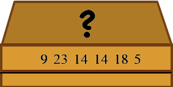

Castor a reçu une boîte avec six nombres inscrits dessus. Ces nombres remplacent les lettres d'un mot magique qui ouvre la boîte. À chaque lettre correspond un seul nombre et inversement.
Un seul des mots ci-dessous peut être le mot magique. Lequel ?
Pour trouver la solution, il faut comparer la structure de la suite de nombres écrits sur la boîte avec la structure de la suite des lettres apparaissant dans les mots proposés. En observant la suite de nombres, on observe que le 3ème nombre et le 4ème nombre sont identiques. Ainsi :
Règle 1 : le mot magique doit avoir une lettre répétée au milieu.
De plus, on remarque que tous les autres nombres sont différents. Ainsi :
Règle 2 : le mot magique ne doit pas utiliser d'autres lettres plusieurs fois.
Seul le mot TUNNEL respecte ces deux règles, c'est donc la solution.
Les autres mots ne conviennent pas :
Dans les machines, les caractères (les lettres, les chiffres, et les tous caractères spéciaux comme %, $, etc.) sont représentés par des nombres. La table de correspondance s'appelle un jeu de caractères.
Les jeux de caractères respectent généralement l'ordre alphabétique, ainsi le nombre associé à la lettre B est typiquement le suivant du nombre associé à la lettre A. Cependant, tous les autres jeux de caractères qui associent exactement un nombre différent à chaque caractère possible, quel que soit l'ordre choisi, seraient également valides.
Pour résoudre cet exercice, il fallait comprendre ce principe de la représentation de caractères par des nombres, puis observer les propriétés particulières du mot à deviner afin de sélectionner la seule proposition qui convient.
Pour rendre incompréhensible un message, une possibilité est de remplacer chaque lettre par un nombre (ou une autre lettre) de toujours la même manière. C'est l'idée du chiffrement par substitution qu'on connaissait déjà dans l'Antiquité, notamment la méthode du chiffre de César.
Ce n'est pas forcément le meilleur cryptage si le message codé est suffisamment long. Une attaque redoutablement efficace étudie les probabilités d'occurrence des lettres dans la langue du message. Par exemple, pour le français, la lettre E est la plus courante avec une fréquence de 15,87%, tandis que les lettres K et W ont des probabilités inférieures à 0,01%. En comparant ces probabilités avec celles des nombres dans le message codé, on peut retrouver le message d'origine. Cette technique d'analyse fréquentielle sert aussi à détecter automatiquement la langue d'un texte, ou à assigner la valeur des lettres au Scrabble.